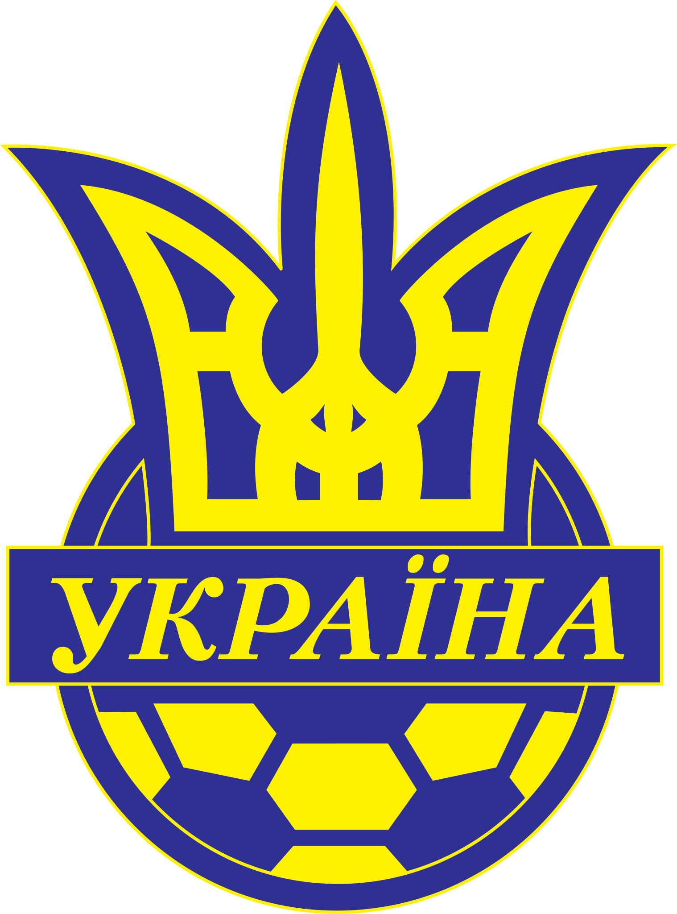

Головна

| Рік | Матчі | Голи |
|---|---|---|
| 1995 | 2 | 0 |
| 1996 | 2 | 1 |
| 1997 | 9 | 4 |
| 1998 | 5 | 1 |
| 1999 | 9 | 2 |
| 2000 | 5 | 5 |
| 2001 | 9 | 6 |
| 2002 | 2 | 0 |
| 2003 | 8 | 3 |
| 2004 | 6 | 4 |
| 2005 | 6 | 2 |
| 2006 | 8 | 5 |
| 2007 | 8 | 3 |
| 2008 | 6 | 3 |
| 2009 | 9 | 4 |
| 2010 | 6 | 2 |
| 2011 | 5 | 1 |
| 2012 | 6 | 2 |
| Всього | 111 | 48 |
Вперше футболку збірної одягнув у 1995 році, перший гол забив в травні 1996го збірній Турції. Став рекордсменом збірної по кількості забитих голів, покількості матчів, проведених у якості капітану. Брав участь у двох великих турнірах: Чемпіонаті Світу 2006 в Німеччині (дійшов до чвертьфіналу, де програли майбутньому чемпіону збірній Італії) та Чемпіонаті Європи 2012, що проходив в Україні і Польщі (зайняли третє місце в групі, Андрій зробив дубль в ворота збірної Швеції, завдяки чому ми їх перемогли).